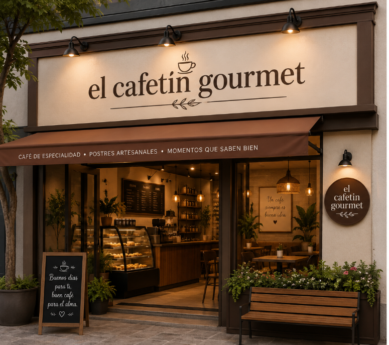

Conócenos

Nuestra Historia
El Cafetín Gourmet nació con la pasión de crear un espacio donde el buen café, la repostería artesanal y un ambiente acogedor se unieran para ofrecer una experiencia única. Desde nuestros inicios, hemos trabajado con productores locales para garantizar la frescura y calidad de cada taza que servimos.
Misión
Brindar a nuestros clientes una experiencia excepcional a través de productos de alta calidad, un servicio cálido y un ambiente que invite a compartir, relajarse y disfrutar.
Visión
Convertirnos en la cafetería preferida de la comunidad, reconocida por nuestro compromiso con el sabor, la innovación y el apoyo a los productores locales.
Valores
- Calidad: Seleccionamos ingredientes frescos y de primera.
- Servicio: Atendemos con amabilidad, respeto y dedicación.
- Comunidad: Apoyamos a negocios y productores locales.
- Pasión: Amamos lo que hacemos y lo reflejamos en cada detalle.
- Innovación: Siempre buscamos nuevas formas de sorprenderte.